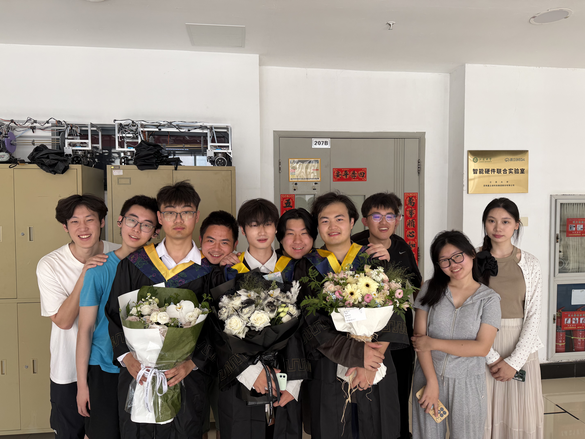

FPGA & Digital Systems
Real-time architectures for sensing, control and high-throughput data processing.
FPGA · Signal Processing · Underwater Acoustics
Building intelligent sensing systems from algorithms to hardware.
I am a master's student in Aerospace Science and Technology at UESTC. My work focuses on FPGA-based high-speed signal processing and underwater acoustic sensing, connecting theoretical methods with practical intelligent systems.
Three connected areas, from sensing and computation to real-world deployment.
Real-time architectures for sensing, control and high-throughput data processing.
Efficient signal chains that connect algorithms with hardware implementation.
Intelligent acoustic sensing systems designed for challenging physical environments.
A path from automation and competition engineering to aerospace research.
I am a member of the New Concept Aircraft Intelligent Manufacturing Center at UESTC, supervised by Professor Min Chen.
Before joining UESTC, I studied Automation at the School of Electrical and Information Engineering, Jiangsu University. I worked in Laboratory 207B with Vice Dean Leijun Xu and Dr. Haining Ma.
2026 — PRESENT
M.Phil. · Aerospace Science and Technology
UNDERGRADUATE
B.Eng. · Automation · Laboratory 207B
Selected engineering projects spanning vision, control and wireless systems.

FPGA-based image acquisition, recognition, analysis and control.

A hardware-centered precision control system for a robotic arm.

A wireless transmission signal simulation system for electronic design competition.
People and experiences behind the engineering work.

A milestone shared with the people who shaped my undergraduate engineering journey.
June 2, 2026 · Jiangsu University